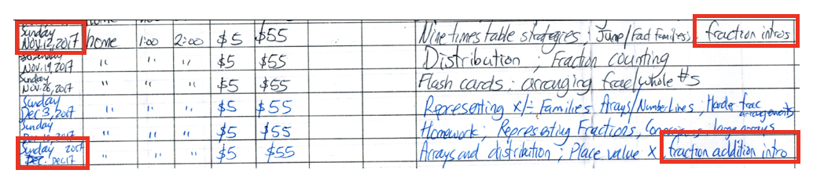

Vision
By June 30, 2023, we will have built the best damn math lessons ever made. They will be so fun and inspiring that grade 5 students will regularly beg us for more grade 10 math homework. We will repeat this feat with 5,000 grade 5 students will detonate an earthquake in education. They will be so easy to use for instructors, that high school students administer them to grade 5 students.
This vision rests on three main hypotheses and when it comes to the approach to those, Elon Musk said it best: “Constantly seek criticism. A well thought out critique of whatever you are doing is as valuable as gold… You should take the approach that you are wrong, that you the entrepreneur are wrong. Your goal is to be less wrong.”
My plan has Achilles Heels and I should find out what they are as cheaply and as quickly as possible.
So, please help me disprove the hypotheses below.
Hypothesis 1: The worst bottlenecks in K-12 academics are whole and rational number sense and introductory algebra. Relieving those bottlenecks will transform students’ entire lives. It’s best to ignore what’s going on in school if students are still struggling with these.
Students, teachers, and parents typically want to focus on work assigned by the math teacher. That could be fractions, geometry, data, probability, measurement, time/clock/calendar, algebra, money, shape and space, graphs and charts, etc.
I believe most of that should be ignored in a 1:1 setting. Regardless of what’s going on in school, students should lay a solid mathematical foundation of:
-
Whole number sense: +, -, ×, and ÷, what they mean, when to use them, and place value.
-
Rational number sense. This is mainly extending whole number sense to fractions, decimals, and ratios/percents.
-
Introductory algebra. This includes algebra’s generality, multiple representations of relations and inferences about them, and preserving equality.
In BC, this would roughly cover all number sense from grades 2 through 8.
With this solid foundation, there’s little to stop a grade 5 student from mastering grade 12 math.
This would transform almost any kid’s life.
If repeated at scale, it would be an earthquake in education.
Disproof of the hypothesis would be students who have mastered rational number sense and introductory algebra, but are still struggling badly in math otherwise. In 10 years in the math education field, I have never met or even heard of such a student, but you may be able to help me find them!
Hypothesis 2: By combining a multi-disciplinary team, rapid prototyping, and video-recorded user-testing, we will achieve pedagogical breakthroughs, including in the quality of educational materials, the compression of the average timespan for learning by at least 75%, and the ability to train older students to administer the lessons to younger students.
Here’s how I intend to differentiate typical pedagogical improvement from the status quo.
| Status Quo |
Bravo Math Initiative |
| Teacher develops lessons alone, inputting hard work and craft knowledge. |
Diverse team develops lesson with hard work, craft knowledge, cognitive science, UX, and design. Drastically broaden the skill set used to develop lessons. |
| Teacher administers 1 veresion of each lesson per year. |
Test and update 4 versions of a lesson per day. Accelerate feedback loop more than a thousand-fold. |
| Teacher improves next version of a lesson based on memory and student output. |
Use all that (left) as evidence plus video of students learning and thinking aloud. Work with radically superior data. |
| Teacher must worry about covering the entire year of government-prescribed learning outcomes. |
Focus on the bottlenecks of K-12 math regardless of student age. |
Even a 5% improvement to each version of a lesson over 20 versions would be a 100% improvement. This would be a huge leap in education, an effect size virtually unheard of in education, at least at scale. The only question is how to make those 5% improvements happen.
Here’s what a typical day of lesson development would look like:
| Time |
Activity |
| 9:00am |
Teacher A administers Version 1 of a lesson to 1-5 students.
Rest of team observes and records on video. |
| 9:30am |
| 10:00am |
Everyone watches the video of Version 1 together.
Everyone collaborates to develop Version 2 of the lesson. |
| 10:30am |
| 11:00am |
| 11:30am |
Teacher B administers Version 2 of the lesson to 1-5 new students.
Rest of team observes and records on video. |
| 12:00pm |
| 12:30pm |
Break |
| 1:00pm |
Everyone watches the video of Version 2 together.
Everyone collaborates to develop Version 3 of the lesson. |
| 1:30pm |
| 2:00pm |
| 2:30pm |
Teacher C administers Version 3 of the lesson to 1-5 new students.
Rest of team observes and records on video. |
| 3:00pm |
| 3:30pm |
Everyone watches the video of Version 3 together.
Everyone collaborates to develop Version 4 of the lesson. |
| 4:00pm |
| 4:30pm |
| etc. |
Continue the cycle until the lesson and resources are just blazingly awesome. |
Unfortunately, educational evidence for rapid prototyping learning activities, as far as I can tell, does not exist. The closest evidence I’ve found is called “Lesson Study” – and it works. That is, Lesson Study works despite the fact that it is, effectively, super slow prototyping, sometimes without video recordings, and without the kind of continuous engagement and talk aloud protocols.
If improvements in the lesson by just a few percent per iteration were possible, this would revolutionize education.
I’m actually well on my way to achieving it. Through years of iteration, I am now tutoring at this rate for introductory fractions, which is the most hated and feared topic in math.
This is an actual receipt from my tutoring lessons.

~4 years of fractions, < 6 hours
I believe such results are completely unheard of in education. And, yes, I will, at no charge, demonstrate these lessons for you or a student you have in mind. Just email me.
If you sit in on those lessons, I think you’ll see that practically anyone can learn to teach fractions this effectively. And practically any kid can learn fractions like this.
Not all of my lessons are of this quality. But for integers, they’re getting there. Same for introductory algebra. And once those are done, that will open the floodgates to massively higher achievement and enjoyment of math.
Mostly decisive disproof of this hypothesis would be significant documentation of evidence that rapid prototyping of lessons did not improve those lessons.
Hypothesis 3: The output of such rapid prototyping will be materials that learners love and older students can quickly learn to teach.
Lesson Study produces highly reusable lesson materials, despite all the differences among students, but those materials are made for teachers.
I believe it is possible to train 17- to 20-year-old students to administer those lessons as well. The rapid prototyping process should allow for sufficient time to collect and refine such activities, games, exercises, puzzles, projects, etc. Training an army of well-resourced math tutors is the path to scalability.
I have already hired one grade 12 student of mine to become a tutor and it is going well, despite the fact that I have very few resources available to her. Soon, I will hire more tutors. I can’t think of an obstacle preventing me from scaling this, nor am I sure what disproof of this hypothesis would look like as it would involve proving a negative.
Metrics of Learning
Say a teacher wanted to measure the notion that student has mastered division. Traditionally, the teacher would give a student a bunch of division exercises.
The problem is a student might divide because it says “division” at the top, not because they see the concept of division implied by the text. The student might then perform the procedures correctly while not knowing what they mean or why the work. The student might then get all the right answers and forget everything in a week.
Instead, one should test - i.e. attempt to falsify - the notion that the student has mastered division by giving some traditional exercises, but mostly:
-
Creating a variety of contexts and challenges of which only some are relevant to recently covered concepts. The student will have to be able to recognize when division is relevant and why, estimate answers, and interpret them.
-
Having the student create, from memory and imagination (no notes or textbooks or other assistance) a similar set of contexts and challenges for themselves.
-
Using interleaving, distributed practice, and elaboration to boost retention. This includes, say, a pop quiz on contents studied 6 months ago.
This style of exercise and assessment is unpopular because in the short-run, every subjective and obvious measure of learning sinks like a stone. It’s a lot easier to just do division procedures than to really think about a word problem and determine if division is relevant. But long-term measures soar, often with effect sizes of 200%. So, this is, then a design and UX problem: How do we make exercises that appear unproductive actually fun and attractive?